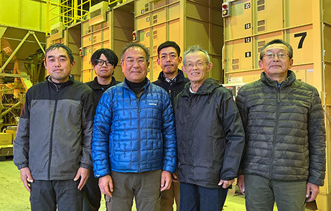
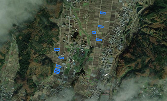

THANK YOU FOR CHOOSING YUKI HOTAKA RICE
THE PRACTICE
通常の中干し期間よりも7日間以上延長することでGHG排出削減につながります。昔ながらの農法にほんの少しの工夫を加えることで、排出削減に大きな効果が期待されます。
Stays flooded — low oxygen, more methane
Drained longer — soil breathes, methane drops
雪ほたかは、中干し延長によるメタン削減状況を衛星とAIによるシステムで可視化することで、より質の高いJクレジット化を図っています。このお米は、J-クレジット制度「水稲栽培における中干し期間の延長」に登録されたプロジェクトを通じて、地球温暖化対策に貢献しています。
WHERE THIS CAME FROM

私たちの昔から伝わる技術を駆使し、大切に大切に米作りを毎年いたしております。
これからも皆さまに「美味しい幻のコシヒカリ」を提供できるよう頑張って参ります。
安心・安全、そして美味しい笑顔をお届けできる米作りを目指します。

Go to Yuki Hotaka site →
環境貢献度を確認しよう
（これは、販売しているすべての容量に対応しています。） お米の袋を選ぶか、重量を選択するだけで、どれだけ温暖化対策につながるかをCO₂削減想定値で確認できます。
どのように検証？
公的に登録・認証される情報に基づいています。
Lynx Connect による活動記録
SPREAD THE WORD
認証された環境貢献米を選ぶことで生まれるポジティブな効果の輪を広げよう。
一袋ずつ、その積み重ねが未来につながっています。